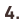

Klutch
Le projet
Klutch, c’est une appli pensée pour aider les lieux indépendants de Bordeaux méconnus ou en difficulté en leur apportant de la visibilité. souhaitait moderniser son site web afin de mieux refléter sa nouvelle stratégie et toucher une cible plus professionnelle.
Lors du workshop, nous avons pu travaillé sur la création du concept, son identité visuelle et l’interface utilisateur, avec une idée simple : permettre aux jeunes de découvrir des adresses uniques tout en soutenant concrètement celles qui font vivre la ville.
La conception
Trouver une idée porteuse de sens
Au début du workshop, nous avons exploré plusieurs pistes avant de revenir à une expérience personnelle : la fermeture d’un bar que nous aimions beaucoup. Ce souvenir commun a fait émerger une problématique réelle, la disparition progressive des lieux indépendants et l’envie de découvrir et d’aider des endroits niches et peu connus. Ce qui est devenue le point de départ du projet Klutch.
Définir la cible
Nous avons ensuite identifié notre cible principale : les jeunes adultes et étudiants. À travers la création d’un persona, nous avons cherché à comprendre leurs usages, leurs habitudes numériques et leur rapport aux lieux culturels afin d’imaginer une solution adaptée.
Penser le livrable
Cette phase a été marquée par de nombreuses hésitations : choix du positionnement, ton à adopter ou encore rôle réel de l’application. Le projet s’est finalement orienté vers la création d’une application mobile, accompagnée d’une communication sur les réseaux sociaux, pensée comme un outil à destination d’une association ayant le même objectif.

Ajuster le concept
Cette phase a été marquée par de nombreuses hésitations : choix du positionnement, ton à adopter ou encore rôle réel de l’application. Ces ajustements nous ont permis d’affiner progressivement une approche communautaire centrée sur la découverte et le soutien local.